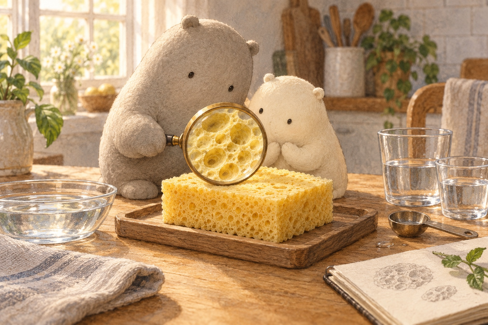

01What is inside all those holes?

Look closer. The magnifier makes the sponge’s open spaces easier to notice.
A little explanation. A kitchen sponge has pores: tiny holes leading into connected spaces. Water can travel through these spaces, like little tunnels. Most kitchen sponges are made by people from cellulose, a plant fibre, or foam. Many sea sponges are simple animals; this kitchen sponge is a made object.
Try this. Find two holes, then imagine a path between spaces inside.